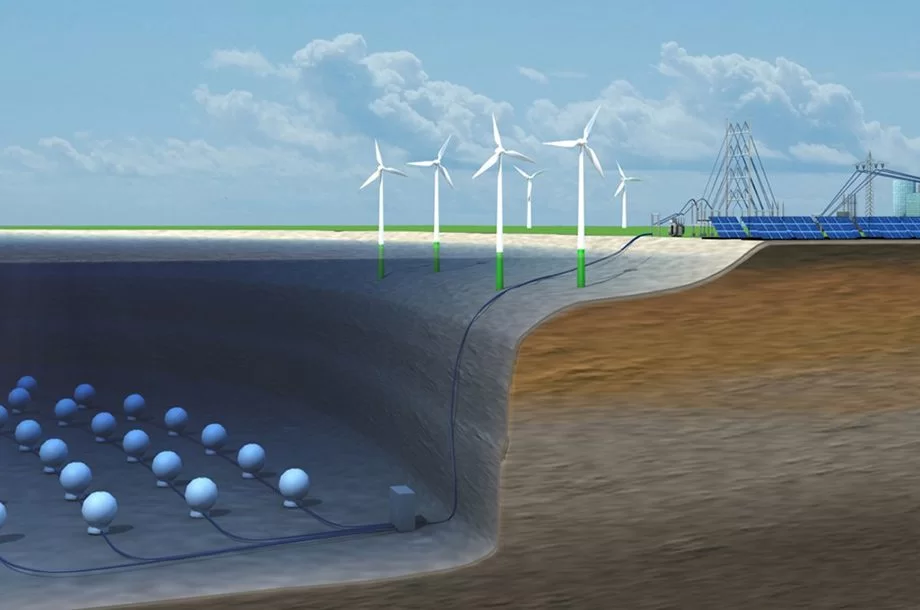

22/10/2025
Cientistas Encontram Nova Fonte de Energia Limpa no Fundo do Pacífico
Pesquisadores descobriram um microrganismo marinho capaz de gerar eletricidade limpa a partir do calor geotérmico nas profundezas da Fossa das Marianas, prometendo revolucionar o setor de energias sustentáveis.
Leia Mais